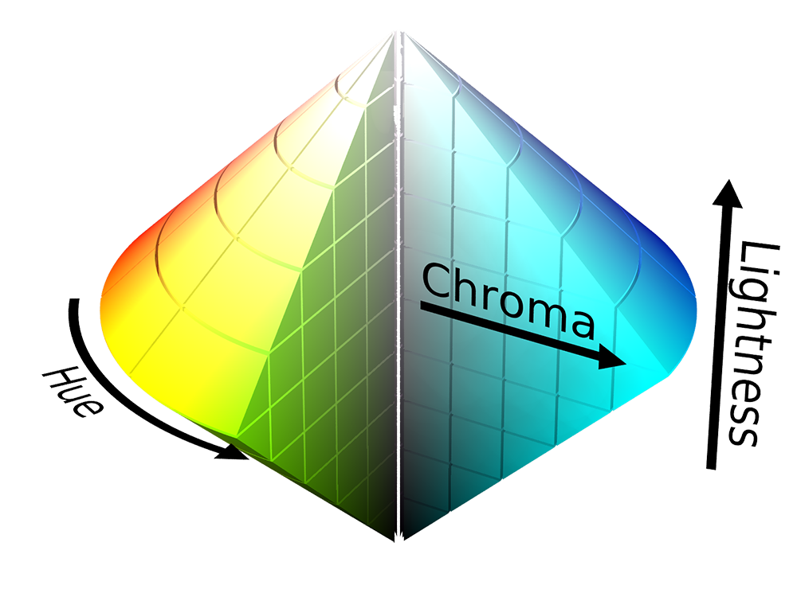
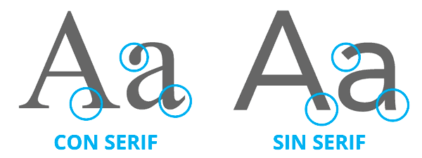
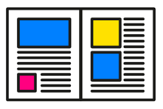
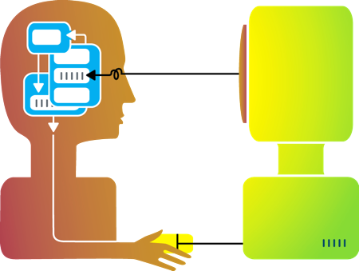

Tema 1: Planificación de interfaces web.
1.Planificación de interfaces web

Modelo RGB: RGB es un modelo de color basado en la síntesis aditiva, con el que es posible representar un color mediante la mezcla por adición de los tres colores de luz primarios. El modelo de color RGB no define por sí mismo lo que significa exactamente rojo, verde o azul, por lo que los mismos valores RGB pueden mostrar colores notablemente diferentes en distintos dispositivos que usen este modelo de color. Aunque utilicen un mismo modelo de color, sus espacios de color pueden variar considerablemente.
Modelo HSL: El modelo HSL(del inglés Hue, Saturation, Lightness), también llamado HSI define un modelo de color en términos de sus componentes constituyentes.

Modelo HSV: El modelo HSV (del inglés Hue, Saturation, Value) define un modelo de color en términos de sus componentes. Se trata de una transformación no lineal del espacio de color RGB, y se puede usar en progresiones de color. Nótese que HSV es lo mismo que HSB pero no que HSL o HSI.
2.Tipografía
Las tipografías Serif se usan para guiar el flujo horizontal de lectura, y no se recomienda alterar el espaciado ya que pierden forma. Son muy útiles para párrafos o textos largos
Por otro lado, las tipografías Sans Serif son las preferidas en la web. Siendo de líneas sencillas, con un buen rendimiento de pixelaje; frescas y modificables en cuanto a separación y tamaño, se han convertido en la primera opción de muchos diseñadores.
Medidas absolutas: Su valor se encuentra definido en términos concretos y de manera medible. Esto quiere decir que no depende de otro valor de referencia, ni del contexto.
Las unidades relativas no son valores exactos sino que se calculan a partir de otro valor de referencia. A pesar de parecer más difíciles de calcular son las más utilizadas en el diseño de sitios web responsive por su adaptabilidad a los diferentes dispositivos
Los iconos: Un icono es una imagen o un símbolo que puedes introducir en tu página web. Funciona como un botón o un enlace en el que puedes hacer clic o simplemente como un elemento decorativo.
3.Estructura de una página web
Cabecera o header está generalmente en la parte superior de la página web. Generalmente está conformado por varios elementos como el logo de la empresa, el nombre, datos de contacto como teléfono e email, e iconos de redes sociales.
Menú o sistema de navegación: Los menús de navegación son básicamente listas de enlaces a las diferentes páginas o secciones de la web. Lo normal en estos casos es enlazar desde la página principal a las secciones más importantes, y desde cada una de ellas a sus contenidos concretos.
Cuerpo de la página, área de contenido El cuerpo de la página es la parte de la interfaz web que presenta a los usuarios información específica sobre un tema concreto. Por lo tanto, es la parte de la página que la identifica e individualiza frente a las demás de un sitio web
Pie de página la sección inferior de una página, en la cual suele incluirse información adicional al cuerpo del contenido. La información adicional contenida en el pie de página puede ser de diferentes tipos.
Espacios en blanco En términos de diseño web, son los espacios entre gráficos, columnas, imágenes, texto, márgenes, y otros elementos.
4.Maquetación
Maquetar una página llamamos a colocar los contenidos de la manera que deseamos. Podría ser un sinónimo de diseñar, aunque el diseño implica realizar una creatividad o un aspecto de la página y maquetar es cuando ya tienes el aspecto definido o diseñado y lo que estás haciendo es colocar los elementos que forman parte del diseño en las posiciones que deseas. La opción más eficiente es maquetar con CAPAS
DIV: Mejor Apariencia ya que puedes cambiar radicalmente tanto la estructura como el entorno visual de la pagina web, mejor entendimiento de los motores de búsqueda sobre la web, puedes modificar el contenido de un div dinámicamente, mayor eficacia al escribir, modificar o añadir código al html, rapidez al momento de cargar nuestra web, compatibilidad con dispositivos para discapacitados, los div se han creado para hacer las divisiones en una página web.
Tablas:No es su cometido, separar el contenido de la presentación, rapidez de descarga, mayor accesibilidad, diseño más rápido, mejor mantenimiento, mejor posicionamiento.
5.Prototipo Web
Un prototipo web consiste en un boceto, navegable o no, que permiten crear una referencia visual de la estructura de una página web, definiendo al detalle el contenido y su distribución visual, organizando así la información a nivel de página
El desarrollo del prototipo comienza con la definición de los objetivos que se quieren conseguir en la web, y con ellos crear una nueva estructura web, en forma de árbol, en la que se dará nombre a todas las categorías del menú de navegación.
Una vez esto, comenzará el diseño de wireframes o bocetos, con el fin de determinar el lugar donde situar los elementos principales de la web, pensando siempre en donde los espera encontrar el usuario.
En la fase final se realizará el prototipo navegable de toda la web, donde se verá toda la estructura de navegación, así como el diseño completo. El programador simplemente tendrá que replicarlo a través de código. Algunos ejemplos son: Justinmind, In Vision, Origami, Proto.io.
6.Mapa de navegación web
El mapa de navegación es un esquema, que se puede pensar como un árbol jerárquico, que representa la arquitectura de las páginas de un sitio web. Esta representación puede ser, como un mapa conceptual, de forma gráfica para visualizar y entender sobre un mapa el recorrido de visitante, es decir su navegación y cómo este llega a lo que está buscando. También, en este se organiza la distribución y la jerarquía del contenido.
Así, entre las ventajas de contar con un mapa de navegación está la diferenciación en un sitio amigable y que entiende al usuario, un fácil acceso al contenido, y con ello, la generación de más conversiones y de satisfacción con el servicio que se provee en un sitio web, como lo puede ser en algunos casos el informativo.
7.Guías de estilo

La guía de estilo es el manual que recoge y detalla el lenguaje visual de todos los elementos y módulos que conformarán el proyecto, sirviéndose de elementos gráficos y reglas que definirán la personalidad de la marca, la paleta de colores, la tipografía, la iconografía, imágenes, espaciados y el carácter general.
En resumen, nunca debe faltar una guía de estilo en nuestros proyectos digitales. Por muy sencillos que sean, permitirán que el proyecto (o proyectos relacionados) mantenga cohesión y una estructura limpia y ordenada y conseguiremos una comunicación más rápida y eficaz con los miembros del equipo.
8.Interacción persona-ordenador
La interacción es la acción que se ejerce recíprocamente entre dos o más objetos, agentes, fuerzas, funciones, etc. Se puede llegar a confundir lo interactivo con lo reactivo ya que en informática lo interactivo se entiende como el resultado de un diálogo entre la computadora y el usuario
Navegación: permite al usuario moverse en diferentes líneas y rutas a través de contenidos
preestablecidos que no varían (por ejemplo en CD-ROM, páginas web o DVD).
Generación: la interacción provoca comportamientos nuevos que determinan el curso de la
aplicación (por ejemplo en los videojuegos).
Modificación: la interacción no solamente permite lecturas multilineales y nuevos
comportamientos, sino que además su resultado modifica permanentemente la naturaleza de la
aplicación (por ejemplo se inserta el nombre del usuario en una base de datos y a partir de entonces
modifica el lenguaje para adaptarlo al nombre del usuario).